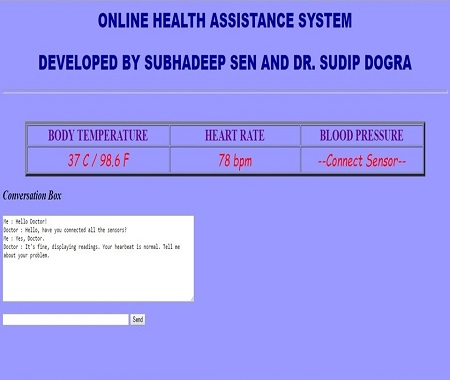

About Me

Software Developer
A dedicated and self-motivated person who is always open to improve and adaptive to the dynamic changes in an organized manner and focused enough to fulfill the goals, and also has the required technical and communication skills needed to make every customer feel special. Easy going by nature and can get along with colleagues.
Skill Set
Data Structure and Algorithm
Design Patterns
Microservice Architecture
| Programming Languages | Basic C, Core Java 9, Basic Python, Javascript |
| Java Frameworks/APIs | Collection, Spring MVC, Springboot, Servlet, JDBC |
| Web Services | RESTFul, SOAP |
| Unit Testing Frameworks/APIs | JUnit4, Mockito, Power Mockito |
| Javascript Framework | Node JS, Angular 7 |
| ESB | Mule 3.x |
| Database | SQL(Oracle DB), NoSQL(MongoDB) |
| Web Server | Tomcat, Web Sphere |
| Build Tool | Maven |
| IDE | Eclipse, STS, Anypoint Studio, RSA |
| Tools | Git, Jenkins, SOAP UI, Postman |
Work Experience
DBS Asia Hub 2 Development Center [05/2019 - Present]
Develoment Engineer, Analyst
I am responsible for analyzing requirements, proposing application design, developing well organized and maintainable code, code reviewing and guiding juniors.
I am working in developing microservices using Springboot, batch jobs using Spring Batch and unit testing of the developed code.
Tata Consultancy Services [10/2016 - 05/2019]
System Engineer
I was involved in analyzing the dynamic requirements and turn them into working software components.
I worked on three projects which were Automated Payment, Guest Pay and Payment Platform based on Agile
practices. I was mostly involved in developing business logics (Controllers, Services, API Calls), backend services (REST),
Microservices, integration of services (ESBs) and unit testing using J2EE, Spring MVC, Spring Framework, Springboot, Mule ESB, Jersey API, JUnit, Mockito and Power Mockito.
Apart from my project work, I used to conduct knowledge sharing sessions in which I had been mastered and also in the phase of learning.
Innovation Lab, Meghnad Saha Institute of Technology [2015 - 2016]
Embedded System Developer
Being dedicated and enthusiastic in technology, I had been given opportunity to work in the Innovation Lab for development of embedded system along with the other
associates and provide training to the other members and fellow students.
Here I had worked on various system development from the scratch including development of hardware and software both.
Published Research Papers (IEEE Journals)
Design and Development of Automatic Intelligent Locking System with Real Time SMS Notifications


In the present era, security is a great concern for everybody; starting from individuals to banks to any business or government organizations. A GSM Based Security System can serve to address this issue of security to a large extent. This would ensure that unauthorized access to secured areas or information is prevented. Keeping this thought in mind, I embarked upon this project of GSM Based Security System using Microcontroller. I have intended to develop a system which will work in every infrastructural condition. It will provide access upon correct password only. In case of any unauthorized access, the system sends alert message through SMS to the stored mobile number.
Design and Development of Smart Switching System for Controlling Home Appliances

The world is changing day by day. We are moving from analog to digital system in almost every fields. For example, our old Television system has now been replaced by digital Television system. Even our cellular phones are becoming smarter. To make our home smarter and digital, I have designed & developed a prototype for home automation where one can control, monitor and remotely access home appliances using mobile phone even if the person is not present at the location and can also get the status of appliances and power. Here the traditional switches has been replaced by digital keys. This system also helps people to keep away from electric shock as there will be no direct contact.
Design and Development of Online Environment Monitoring System


Environment is a very important factor in almost every field starting from human survival to any working field. In this project, I am introducing a system which can be used to monitor environmental details. This system is based on Internet of Things (IoT) which makes it a location independent system and can be accessed from any part of the world via Internet. This proposed system can give the details of temperature, humidity, pressure, altitude and presence of flammable gas in a particular location. Not only that, it can further be modified according to the needs of environmental details. As this system can be controlled from Internet, one can remotely monitor the sensor details and if the values cross a threshold limit, necessary actions can be taken immediately.
Design and Development of Online Health Assistance System


Health is one of the important factors of human life. Often it happens that we don’t get an appointment for doctor. Sometimes we may require to consult with an expert doctor from any part of the world. In this project, I have designed and developed an IoT based system that will help one to connect with doctor very easily. Not only that, this system has the ability to measure necessary vitals that are required for primary diagnostics. This basic prototype has the capability to measure heart rate and body temperature and display those information on the web page of the consultant doctor. This system also provides an option to directly communicate with the doctor using the conversation box. It can further be extended according to needs of measurement and for live video conference with the doctor.
Developed Software Applications
Annotation Processing Engine
The Annotation Processing Engine has the capability of scanning the annotated classes, fields and methods in a given package and processing them according to the instruction provided to the engine. @DefineController and @DefineComponent are the class level annotations by which the engine identifies a class and creates its object in the object container. @AutoInject is a field level annotation which helps the engine to process dependency injection. @HandlerMethod is a method level annotation which helps the engine to identify a method inside an annotated class and execute it by injecting the required arguments.
HTTP Web Server
The HTTP Web Server is a multi-threaded web application server and has the capability of handling GET and POST request. The server works with the Annotation Processing Engine. It accepts the request and builds the request object by extracting information from the incoming request. Then it sends required details to the processing engine for further execution based on the request. Once the view name is retrieved after processing, it sends the detail to response processor. Now it looks for the view and process it for variable replacement and then go for building the proper response header. Once the response processing is done, the response object is sent to response sender and finally the server sends the response back to the client.
E-Commerce
This is a very simple prototype of an E-Commerce application. Here one customer can register, if not registered; and registered customer can login into the application for viewing the products, adding them into cart and/or can proceed further for placing the order(s) and can also apply coupon code for getting discount on total. The customer can also view the order history.
If you are an admin user then come back to base url after login for exploring the available REST services and H2 Database. The default admin user Id is sunny12345 and password is 12345.
This is a complete Springboot Project (MVC and REST API). In this project, H2 in-memory database has been used to create the tables with the help of Java Persistence API (JPA) and Java POJO classes(Entities). REST controllers are there to expose the available services as REST APIs secured with basic authentication and documented with swagger documentation. As a whole, It seems a monolithic application, but it is not, beacuse the services are independent and can be deployed to different servers to achieve the microservices architecture.
Banking Application API
This API provides very simple interfaces required for net banking application which is developed in Node JS and secured by Json Web Token (JWT). It includes three independent services, known as User-Service, Account-Service and Transaction-Service which have been developed keeping the concept and design of microservices in mind. Hence, these services can be independently deployed to different servers with minimal configurations. The User-Service takes care of handling user related information, the Account-Service takes care of handling account related information and the Transaction-Service takes care of handling transaction related information. The endpoints /register and /validateuser in User-Service are not secured by JWT token. These three services interact with their corresponding MongoDB collection.
Monthly Expense Manager
This is a monthly expense manager application where user can maintain and keep track of the expenses. The API for this application has been developed using Springboot (REST) along with Embedded MongoDB and documented with Swagger. The user interface has been developed with Angular 7. User can perform the following operations in the application: 1. Add daily expense 2. Set monthly budget limit 3. View expense by a particular date 4. View overall monthly expenses 5. View overall yearly expenses
Developed Embedded Systems
Design and Development of Automatic Irrigation System
Farmers are the main source for cultivation and providing crops to us without which our daily life becomes impossible. They really work hard to grow their crops in the shiny-hotter summer, far away from their residential places and have to walk a lot, just to provide regular water to the crops. Hence, this system will help them to reduce the effort of supplying water just by controlling the irrigation pump from their cellular phones and getting the status.
Design and Development of Real Time Digital Clock


Self interested project. A real time digital clock that helps to keep track of date and time and one can also available few of the facilities available in digital clocks sold in market. For example, one can set or reset date/time, set alarm, turn on/off alarm, see the alarm time, turn on/off the backlit which has been specifically designed for night. The backlit is automated here, it is automatically turned off at day time and is automatically turned on at night time.
Design and Development of Wireless RC Car

Self interested project. A wireless remote control car that can be controlled using a remote within 100 meter radius. It uses a wireless (RX-TX) module, encoder and decoder to encode the inputs coming from the remote and to decode the received encoded signal respectively. Along with this, it also uses a motor driver IC to drive the motors of the car.
Design and Development of System Development board
This is a general purpose embedded system development board. This board provides a platform for developing embedded system prototypes. It supports 8085 microcontroller, 20x2 LCD display, two relays with AC/DC isolation, two 7-segment displays, proximity sensor, buzzer, 4 push buttons, 555 Timer and DTMF decoder.


Academics
Meghnad Saha Institute of Technology (2012 - 2016) Graduated (Bachelor of Technology) in Electronics and Communication Engineering (ECE)
Chittaranjan High School (2010 - 2012) Completed intermediate (10+2) in Science
Chittaranjan High School (2004 - 2010) Completed matriculation (10)
Contact Me
Do you want to contact me ?